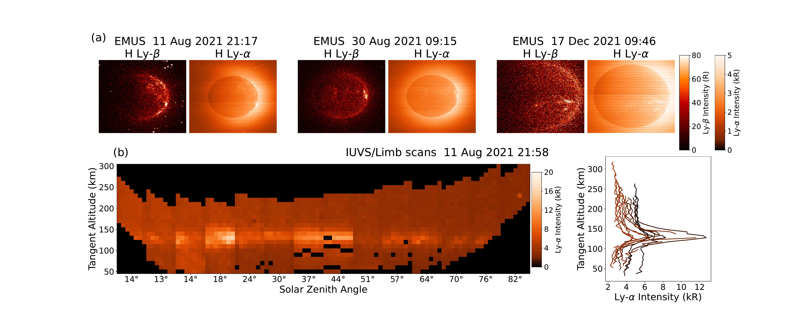
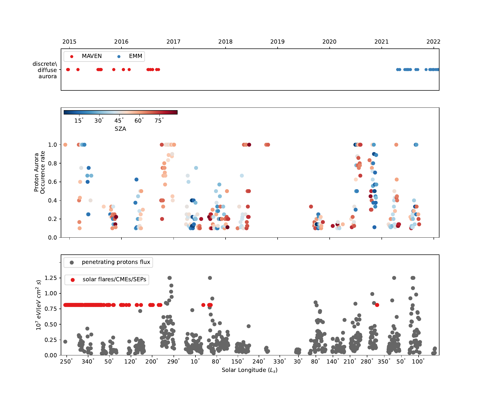
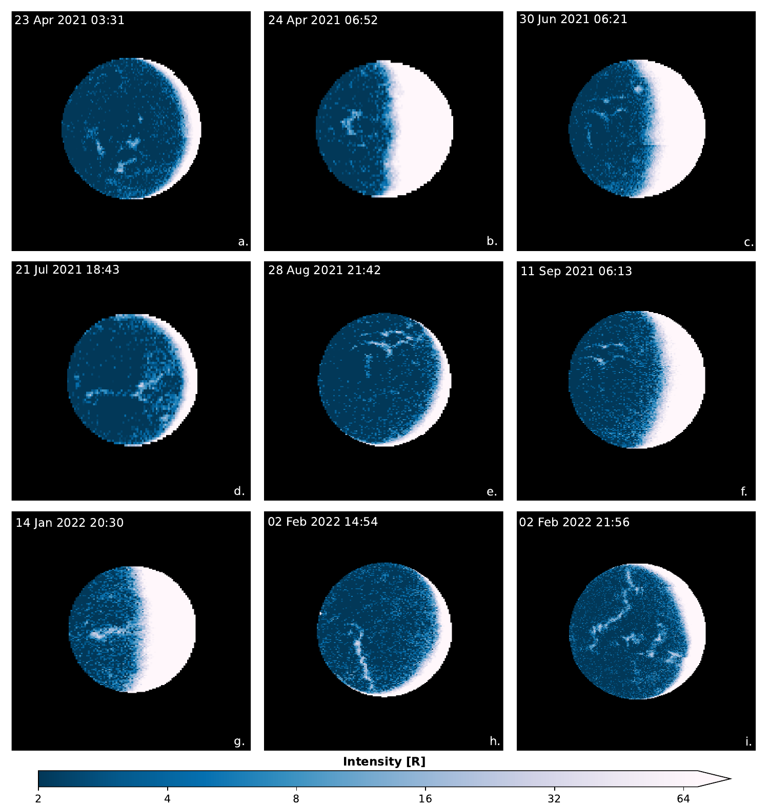
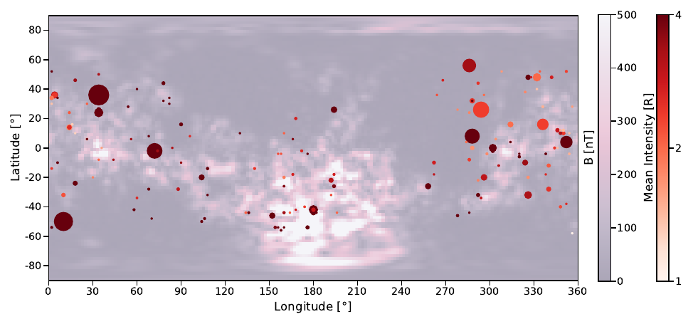
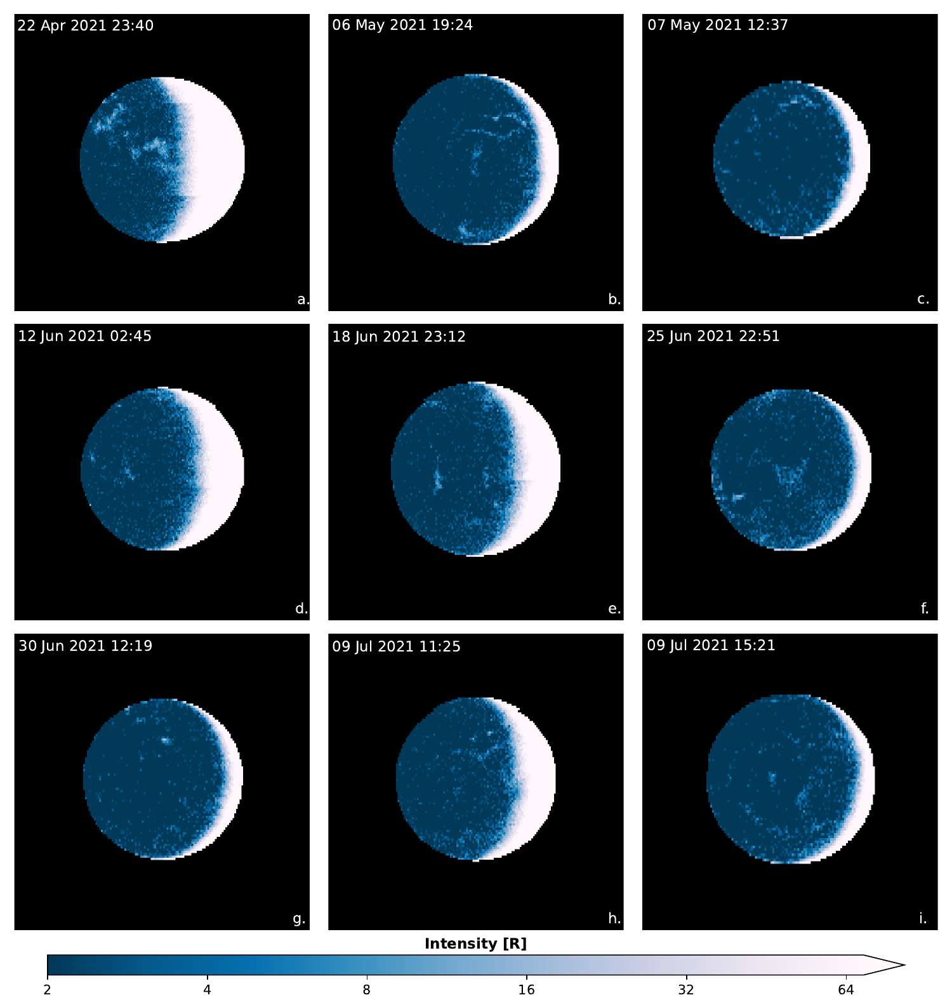
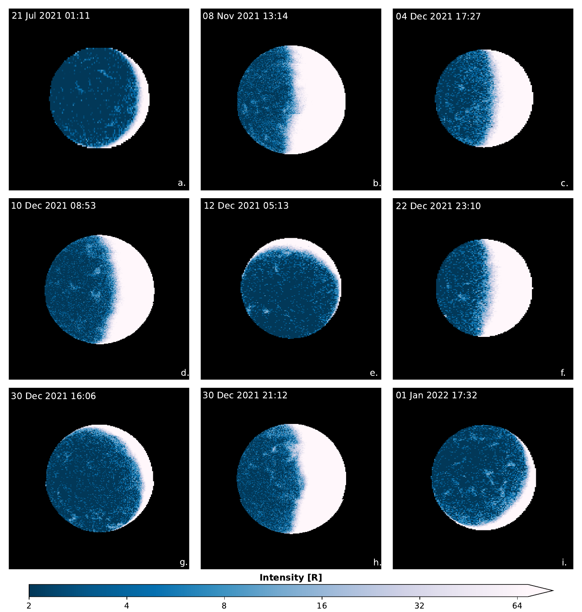
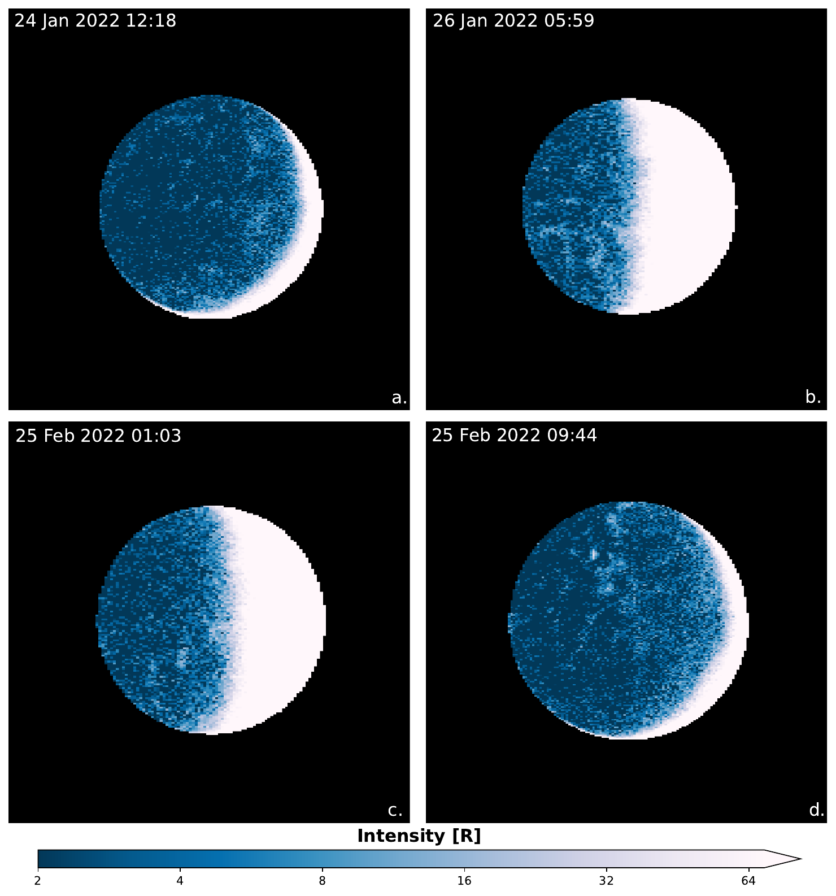

الشفق على المريخ: من الاكتشاف إلى التطورات الحديثة
Dimitra Atri1* , Dattaraj B. Dhuri1, Mathilde Simoni1 and Katepalli R. Sreenivasan1,2 1*Center for Space Science, New York University Abu Dhabi, Saadiyat Island, Abu Dhabi, PO Box 129188, UAE. 2Department of Physics, Courant Institute of Mathematical Sciences, and Tandon School of Engineering, New York University, 726 Broadway, New York, New York, USA. *Corresponding author(s). E-mail(s): atri@nyu.edu; Contributing authors: dbd7602@nyu.edu; mps565@nyu.edu; krs3@nyu.edu; Abstract الشفق هو انبعاثات تحدث في الغلاف الجوي لكوكب نتيجة تفاعله مع بيئة البلازما المحيطة. وقد رُصد في معظم كواكب النظام الشمسي وفي بعض أقماره. ومنذ اكتشاف الشفق على المريخ لأول مرة في 2005، دُرس على نطاق واسع، وأصبح الآن مجالًا بحثيًا سريع النمو. وبما أن المريخ يفتقر إلى مجال مغناطيسي عالمي ذاتي، فإن مجاله القشري موزع في أنحاء الكوكب، وتؤدي تفاعلاته مع بيئة البلازما المحيطة إلى عدد من العمليات المعقدة التي تُنتج عدة أنواع من الشفق غير المألوفة على الأرض. وقد صُنّف الشفق المريخي إلى شفق منتشر، وشفق منفصل، وشفق بروتوني. ومع القدرة الجديدة على الرصد الشامل التي أتاحها مسبار الأمل، رُصد نوعان جديدان من الشفق. ويُعرف أحدهما، وهو يحدث على مقياس مكاني أكبر بكثير ويغطي قدرًا كبيرًا من القرص، باسم الشفق المنفصل المتعرج. أما الفئة الفرعية الأخرى فهي أحد أشكال الشفق البروتوني المرصود على هيئة رقع. وستوفر الدراسة الإضافية لهذه الظواهر رؤى معمقة في التفاعلات بين الغلاف الجوي والغلاف المغناطيسي وبيئة البلازما المحيطة بالمريخ. ونقدم هنا مراجعة موجزة للعمل المنجز في هذا الموضوع خلال السنوات 17 الماضية منذ اكتشافه، ونورد تطورات جديدة استنادًا إلى رصد مسبار الأمل. Keywords: المريخ، الشفق، الرياح الشمسية، الغلاف المغناطيسي1 مقدمة
تتفاعل الجسيمات المشحونة مع الغلاف الجوي الكوكبي وتدفع عددًا من العمليات [1, 2] التي تشمل إثارة الجزيئات والذرات وتأيينها، مما يؤدي في بعض الحالات إلى انبعاثات مبهرة تُعرف بالشفق. وقد رُصد الشفق على عدة كواكب وبعض الأقمار في النظام الشمسي. وينشأ معظم الشفق من تفاعل الرياح الشمسية أو النشاط المرتبط بطقس الفضاء مع الغلاف المغناطيسي الكوكبي (إن وُجد) ثم مع الغلاف الجوي في نهاية المطاف. وتشكل ظواهر الشفق على أقمار المشتري استثناءً لأن مصدر الجسيمات المشحونة هو إلكترونات يسرّعها المشتري. وعلى الأرض، صُنّف الشفق إلى ثلاث فئات، لكل منها آلية وبنية شكلية مميزتان [3]. فألمع أنواع الشفق وأكثرها شيوعًا، وهو “الشفق المنفصل"، ينتج عن تفاعل الرياح الشمسية مع خطوط المجال المغناطيسي على امتداد القطبين المغناطيسيين، وما يترتب على ذلك من ترسّب للإلكترونات في الغلاف الجوي مؤديًا إلى هذه الانبعاثات. أما “الشفق المنتشر" الأقل سطوعًا فيحدث بعيدًا عن القطبين المغناطيسيين بسبب تشتت الجسيمات على خطوط المجال المغلقة في الغلاف المغناطيسي للأرض. وهاتان الفئتان شائعتان وتُرصدان في أنحاء النظام الشمسي. وهناك نوع آخر هو شفق المطر القطبي، وينجم عن تفاعل إلكترونات مسرّعة شمسيًا مع الغلاف الجوي قرب المنطقة القطبية. ويُرصد الشفق المنفصل على الكواكب ذات المجال المغناطيسي الذاتي، في حين يُرصد الشفق المنتشر على الكواكب التي لا تمتلك مثل هذا المجال. ويُرصد الشفق المنتشر على الزهرة (حتى عند الأطوال الموجية المرئية) وعلى قمري المشتري، آيو وأوروبا، اللذين يفتقران إلى أي نوع من المجال المغناطيسي. ولا يمتلك الزهرة أي مجال مغناطيسي ذاتي، وينتج الشفق فيه عن التفاعل بين الغلاف الأيوني والرياح الشمسية وغيرها من الأحداث المرتبطة بطقس الفضاء. وهو منتشر وممتد على كامل الجانب الليلي للكوكب [4]. ويُعرف المشتري بأنه يمتلك أقوى شفق في النظام الشمسي. فهو سمة دائمة تُرصد قرب كلا القطبين المغناطيسيين، وكذلك في المنطقة الواقعة بين الأثر المغناطيسي لقمر آيو والانبعاث الشفقي الرئيسي [5]. وترتبط سمات انبعاثية أصغر أيضًا بقمرَي المشتري الآخرين، أوروبا وغانيميد.
ونظرًا لصغر حجم المريخ مقارنة بالأرض، برد لبّ المريخ مبكرًا، منذ نحو 4 مليار سنة، ونتيجة لذلك فقد الكوكب مجاله المغناطيسي العالمي الذاتي. ثم فقد الكوكب معظم غلافه الجوي، مما أدى إلى تغير مناخي جذري حوّله إلى كوكب بارد وجاف كما نراه اليوم [6]. ومع ذلك، حُبس المجال المغناطيسي في القشرة عند مواقع مختلفة على الكوكب، وهو ما يُعرف بالمجال المغناطيسي القشري [7]. وتتفاعل هذه المجالات القشرية أيضًا مع الرياح الشمسية الوافدة، فتجعل خطوط المجال المفتوحة 1 تلتف حول الكوكب. وينتج الشفق المنفصل عن تفاعل الإلكترونات مع الغلاف الجوي على طول خطوط المجال المغلقة، في حين ينتج الشفق المنتشر عن الإلكترونات على طول خطوط المجال المفتوحة. كما رُصد الشفق البروتوني، الناتج عن اختراق بروتونات الرياح الشمسية بوصفها ذرات متعادلة نشطة (ENAs)، داخل الغلاف المغناطيسي المستحث للمريخ 2 [8]. إن تفاعل بلازما الرياح الشمسية مع الغلاف المغناطيسي والغلاف الجوي للمريخ بالغ التعقيد، ويؤدي إلى عدة أنواع من الانبعاثات الشفقية التي سنصفها في الأقسام التالية. وإضافة إلى هذه الانبعاثات، تودع الجسيمات المشحونة الطاقة أيضًا، مساهمة في إنتاج الأيونات، وفي التغيرات الكيميائية الضوئية في الغلاف الجوي، وفي التسخين، وفي هروب الغلاف الجوي.
سنركز في هذه الورقة على أرصاد الشفق المريخي بواسطة بعثات مختلفة وعلى آلياته الكامنة (القسم 2). وفي القسم 3، سنصف الأرصاد الجديدة التي أجرتها مهمة الإمارات لاستكشاف المريخ (EMM)، والمشار إليها أيضًا باسم مسبار “الأمل"، ونناقش أهمية هذه الأرصاد (القسم 4). وسيتيح لنا ذلك اكتساب رؤى في عدد من العمليات النشطة في الغلاف الجوي للمريخ.
2 الشفق على المريخ
2.1 الشفق المنفصل
يُعد الشفق المنفصل أكثر أنواع الشفق دراسةً على المريخ. فهو محصور في مقاييس مكانية صغيرة ويُرصد عمومًا قرب مناطق ذات مجالات مغناطيسية قشرية قوية. وقد اكتُشف لأول مرة في 2005 [9] باستخدام أداة SPICAM (مطيافية استقصاء خصائص الغلاف الجوي للمريخ) [10]، وهي مطياف للأشعة فوق البنفسجية على متن Mars Express [11]. وقد رُصد الانبعاث المعزَّز عبر عدة حزم – حزمة CO (135-170 nm)، وحزم كاميرون لـ CO (190-270 nm)، والازدواج فوق البنفسجي UVD لـ CO2+ (289 nm)، وخط الأكسجين عند 297.2 nm، وهو انبعاث تولده إلكترونات تتفاعل مع CO2.
ويُعتقد أن هذه الظواهر الشفقية تنتج عن تفاعل الإلكترونات مع الغلاف الجوي العلوي في مواقع توجد فيها شذوذات في المجال المغناطيسي ضمن قشرة المريخ. إذ تتحرك فيوض كبيرة من الإلكترونات على طول خطوط المجال القشري وتثير الغلاف الجوي العلوي، مؤدية إلى هذه الانبعاثات. وهذا التركيز المتزايد من الإلكترونات موضعي بدرجة عالية، بخلاف الشفق المرصود على الأرض، ومن هنا تأتي الطبيعة الموضعية للانبعاثات. وتُرصد هذه الانبعاثات على ارتفاع يقارب 130 km في رقع يبلغ حجمها نحو 10 km. وتتمثل الآلية الرئيسية في ترسّب إلكترونات ذات طاقات من 40-200 eV في غلاف الجانب الليلي على ارتفاع يقارب 135 km. ويشبه توزيع الطاقة الأعظمي لهذه الإلكترونات توزيع الإلكترونات المسؤولة عن الشفق المنفصل على الأرض [12]. وقد أتاحت الأرصاد التي أجراها المسبار المداري Mars Global Surveyor (MGS) الحصول على أطياف هذه الإلكترونات، وأفادت بطاقات عظمى ضمن المجال 100 eV - 2.5 keV [12]. وتعزز الفيض عند القمة بعامل قدره 10-10،000 مقارنة بأطياف إلكترونات الجانب الليلي.
كما دُرس الشفق المنفصل على نطاق واسع بواسطة المسبار المداري MAVEN (الغلاف الجوي للمريخ والمواد المتطايرة وتطورها [13]) باستخدام أداة IUVS (مطياف التصوير بالأشعة فوق البنفسجية) [14]. وهذه الظواهر الشفقية شائعة ويُعرف أنها تحدث كل مساء. وقد أبلغت أرصاد MAVEN عن أحداث عالية الشدة ومعدلات حدوث مرتفعة في نصف الكرة الجنوبي، حيث تنتشر المجالات القشرية القوية. وشملت هذه الأرصاد أيضًا أحداثًا في مناطق ذات مجالات قشرية ضعيفة أو معدومة، على الرغم من أن الشفق كان أقل سطوعًا، لكنه امتلك الخصائص الطيفية نفسها والارتفاع الأعظمي نفسه. ولوحظ اعتماد زمني قوي، إذ يحدث معظمها خلال ساعات المساء عندما يكون المجال المغناطيسي بين الكواكب (IMF) مصطفًا بصورة مواتية. وقد أُجريت أرصاد قليلة نسبيًا في نصف الكرة الشمالي حيث يُعرف أن المجالات القشرية ضعيفة.
وجدت دراسة تجريبية [15] لأحداث الإلكترونات الشفقية، التي تولدها إلكترونات في المجال 50 eV - 2 keV وبفيض طاقي يزيد على 1.8E-5 W/m2/sr، علاقة قياس خطية بين فيض الإلكترونات وسطوع أحداث الشفق. ودرست الورقة الحديثة [16] اعتماد تكرار حدوث الشفق على ظروف الرياح الشمسية في المنبع — ولا سيما على شدة IMF وزاوية المخروط، والضغط الديناميكي للرياح الشمسية. ووجد المؤلفون وجود فرق واضح بين اعتماد هذه الكميات على معدل الحدوث داخل منطقة المجال القشري القوي (SCFR) الواقعة في نصف الكرة الجنوبي للمريخ وخارجها. وأُبلغ عن معدل حدوث عال في SCFR عند زوايا ساعة IMF السالبة، مما يزيد احتمال إعادة الاتصال المغناطيسي. ويؤدي ذلك إلى دخول عدد أكبر من الجسيمات إلى الغلاف الجوي السفلي وإنتاج الشفق. كما وُجد أن شدة IMF تزيد معدل الحدوث زيادة معتدلة، في حين لا يؤثر اتجاه IMF في تكرار الكشف خارج SCFR. ويعتمد التكرار بقوة على الضغط الديناميكي للرياح الشمسية، مع أن تأثيره في السطوع خارج المنطقة ضئيل جدًا. ويعتمد معدل الحدوث اعتمادًا معتدلًا على زاوية الساعة وزاوية المخروط لـ IMF، وعلى الضغط الديناميكي للرياح الشمسية داخل SCFR.
2.2 الشفق المنتشر
اكتُشف الشفق المنتشر [17] لأول مرة بواسطة أداة IUVS (مطياف التصوير بالأشعة فوق البنفسجية) [18] على متن المركبة الفضائية MAVEN [13]. وقد رُصدت انبعاثات على ارتفاعات منخفضة، متزامنة مع أحداث الجسيمات الشمسية النشطة (SEP)، وصولًا إلى ارتفاع 60 km، مما يشير إلى أن المصدر يتكون من جسيمات أعلى طاقة من تلك التي تنتج الشفق المنفصل عند ارتفاعات أكبر. وبخلاف الشفق المنفصل، حيث تُسرَّع الجسيمات بفعل تفاعلات مع الغلاف المغناطيسي، ينتج الشفق المنتشر عن إلكترونات سرّعتها الشمس، لا عن تسريع موضعي. وتصطدم هذه الإلكترونات المسرّعة شمسيًا بخطوط المجال المفتوحة والملتفة على المريخ، وتتفاعل مع الغلاف الجوي، وتنتج الانبعاثات.
تبلغ شدة الشفق المنتشر نحو 2 رتب مقدارية أدنى من توهج النهار النموذجي. ويُرى عند ارتفاع يقارب 60 km، بخلاف توهج النهار الذي يحدث على ارتفاعات بين 120 و150 km. وقد أظهر تحليل إضافي أن طاقة هذه الجسيمات أعلى بمقدار 2-3 رتب مقدارية من طاقة الجسيمات التي تنتج الشفق المنفصل، ولذلك فهي تخترق الغلاف الجوي إلى أعماق أكبر بكثير. ولا توجد علاقة ارتباط بين الموقع الجغرافي على الكوكب والسطوع المرصود. ويعود ذلك إلى أن موضع المجال المغناطيسي المفتوح والملتَف حول الكوكب يتغير مع مواجهته ظروفًا متغيرة للرياح الشمسية. وقد أُبلغ عن عدة حالات شفق أثناء أحداث SEP. ويُظهر متوسط ملف الانبعاث الرأسي قمة عند ارتفاع 60-70 km. وتشير النمذجة إلى أنها ناجمة عن إلكترونات في مجال 10-200 keV ذات دليل قانون قوة قدره -2.2.
وينتج شفق المطر القطبي المرصود على الأرض أيضًا عن إلكترونات مسرّعة شمسيًا كما هي الحال في المريخ. كما يُرى على الزهرة وقمرَي المشتري آيو وأوروبا شفق منتشر مشابه موزع في أنحاء الكوكب أو القمر. ولا يمتلك الزهرة أي مجال مغناطيسي، لا عالميًا ولا منفصلًا، وينتج الشفق فيه عن أحداث SEP ويكون مرئيًا عند الأطوال الموجية فوق البنفسجية والمرئية. أما في حالتي أوروبا وآيو، فتتفاعل الإلكترونات التي يسرّعها المجال المغناطيسي للمشتري مع الغلاف الجوي الرقيق للقمرين وتنتج شفقًا منتشرًا موزعًا على كامل الكرة.
2.3 الشفق البروتوني
إضافة إلى الإلكترونات، تتفاعل بروتونات الرياح الشمسية عالية الطاقة أيضًا مع أغلفة الكواكب الجوية وتؤدي إلى انبعاثات شفقية. وقد عُرفت أرصاد الشفق البروتوني الأرضي منذ قرابة قرن، مع انبعاثات في خطي H Balmer-α و-β. غير أنها لم تُحدد على المريخ إلا مؤخرًا، في 2017، من أرصاد IUVS Lyman-α [8]. وقد حُدد الشفق البروتوني لاحقًا أيضًا من SPICAM [19]، ومؤخرًا جدًا من EMM/EMUS [20, 21] مع سمات شكلية جديدة (انظر القسم 3). إن غياب مجال مغناطيسي عالمي ذاتي يجعل الشفق البروتوني على المريخ مختلفًا جدًا عن نظيره على الأرض.
ونتيجة للجاذبية الضعيفة وغياب مجال مغناطيسي كوكبي قوي، تمتد هالة H على المريخ إلى خارج الغلاف المغناطيسي المستحث بكثير وتتعرض للرياح الشمسية. ويمكن لبروتونات الرياح الشمسية أن تخضع لتبادل شحنة مع H المتعادل في الهالة، خارج صدمة القوس، وتتحول إلى ذرات متعادلة نشطة (ENAs). وتستطيع هذه الذرات المتعادلة النشطة اختراق صدمة القوس والغلاف المغناطيسي المستحث لتبلغ ارتفاعات الغلاف الحراري (100-200 km). وداخل الغلاف الحراري، تتفاعل ENAs مع الغلاف الجوي CO2 لتتحول ذهابًا وإيابًا بين بروتونات وENAs عبر نزع الإلكترونات وتبادل الشحنة، على التوالي. وقد رُصدت هذه البروتونات عالية الطاقة (∼ 1 keV) المخترقة من الرياح الشمسية بواسطة MAVEN [22]. وتفقد البروتونات المخترقة، التي تُثار في هذه العملية، إثارتها عبر إطلاق انبعاثات الشفق البروتوني [8]. وتتمثل البصمة المميزة للشفق البروتوني على المريخ في زيادة شدة مقدارها عدة kR في Ly-α، وقد شوهدت بوضوح لأول مرة في ملفات ارتفاع المسح الطرفي لـ IUVS كما يبيّن اللوح (b) من الشكل 1. وباستخدام EMUS تُحدد هذه الظواهر الشفقية البروتونية بوصفها زيادة بارزة في الشدة في أرصاد Ly-α وLy-β كما يبيّن اللوح (a) من الشكل 1. وخلافًا للشفق الإلكتروني المنفصل والمنتشر، اللذين يحدثان على الجانب الليلي، يُرصد الشفق البروتوني في الغالب على الجانب النهاري [23]. وتكون انبعاثات الشفق البروتوني عادة أشد بعدة مرات من توهج النهار الخلفي المميز لـ H Ly-α (كما هو موضح في الشكل 1).
يُعد الشفق البروتوني أحد أكثر أنواع الشفق المرصودة على المريخ، إذ وُجد في 14% من أرصاد المسح الطرفي عند الحضيض من IUVS [23]. وبما أن ENAs المسؤولة عن الشفق البروتوني تتشكل في هالة H، فإن معدلات حدوث الشفق البروتوني تبلغ ذروتها لتقترب من الواحدية حول الانقلاب الصيفي الجنوبي Ls = 270° ، عندما تنتفخ هالة H مع ازدياد كثافات عمود H الهالي. ويوضح الشكل 2 تغير معدل حدوث الشفق البروتوني (المحدد في مسوح IUVS الطرفية عند الحضيض) بوصفه دالة في الفصل، مع ذروة مميزة عند Ls = 270°. وتقابل هذه الذروة فيضًا متزايدًا من بروتونات الرياح الشمسية المخترقة (كما رصده MAVEN، والموضح أيضًا في الشكل 2) عقب انتفاخ هالة H والقرب من الحضيض الشمسي [24]. إضافة إلى ذلك، تميل النشاطات الشمسية (التوهجات/الانبعاثات الكتلية الإكليلية) إلى زيادة شدة انبعاثات الشفق البروتوني. وبينما يُتوقع أن تعيق المجالات المغناطيسية (القشرية) القوية البروتونات المخترقة [25]، فإن الشفق البروتوني قد يحدث على الأرجح بتواتر أكبر أثناء الاتجاه الشعاعي لـ IMF [26]. ولا تزال الآثار الكاملة لاتجاه IMF والمجالات المغناطيسية القشرية للمريخ في حدوث الشفق البروتوني وبنيته الشكلية بحاجة إلى دراسة (انظر القسم 3.2).
3 الأرصاد الحديثة بمسبار الأمل
على الرغم من أن الشفق المريخي دُرس منذ 2005، فإن الأرصاد كانت محصورة في رقع موضعية على الكوكب بسبب التغطية الجغرافية المحدودة للمسابير المدارية مثل MEX وMAVEN. ومن ناحية أخرى، فإن EMM [27, 28]، بفضل مداره العالي الارتفاع (19،970 km × 42،650 km) وذي فترة (∼55 hr)، يوفر رؤية عالمية للكوكب بحساسية عالية في الأطوال الموجية المرئية [29]، وتحت الحمراء [30]، وفوق البنفسجية [20]. وقد مكّنت هذه القدرة الجديدة من رصد الشفق على مقياس كوكبي، وأدت إلى اكتشاف نوعين جديدين من الشفق، نصفهما أدناه.
3.1 الشفق المتعرج
EMUS [20] مطياف للأشعة فوق البنفسجية على متن EMM، حساس في مجال الأطوال الموجية 100-170 nm. وقد عمل المسبار المداري حول المريخ منذ فبراير 2021، أما أرصاد EMUS المستخدمة هنا فهي من المرحلة العلمية للبعثة التي بدأت في مايو 2021. وأتاح EMUS أولى أرصاد الشفق في الأشعة فوق البنفسجية القصوى (EUV: 10-120 nm) والأشعة فوق البنفسجية البعيدة (FUV: 122-200 nm)، التي يمكن رصدها في نحو ثلاثة أرباع جميع أرصاد الجانب الليلي [31]. ويمكن رصد الشفق المنفصل بأفضل صورة في خط الأكسجين 130.4 nm، الناتج عن اضمحلال الأكسجين المثار من 3S1 إلى 3P2. وتنتج ذرات الأكسجين المثارة هذه من التفاعل المباشر مع الإلكترونات النشطة ومن الإثارة التفككية لـ CO2 وCO على حد سواء. وقد ظهرت في 31 من أرصاد EMM المحددة في الجدول 1.
يعرض الشكل 3 عدد 9 أرصاد مختارة من أداة EMUS في حزمة الأكسجين 130.4 nm. وتُظهر هذه الأرصاد سمات شفقية منفصلة التُقطت خلال المدارات 42، 43، 73، 83، 99، 105، 160، 167، و168، من أبريل 2021 إلى فبراير 2022. ويمكن رصد الشفق بلونه الأفتح على الجانب الليلي من قرص المريخ. إضافة إلى ذلك، يمكن العثور على 22 أرصاد أخرى لأحداث شفق منفصل في الأشكال A.1، وA.2، وA.3 من الملحق.
ويمكن رصد السمات الشفقية أيضًا عند أطوال موجية أخرى، مثل 98.9 nm، و102.7 nm، و104 nm، و135.6 nm، غير أن الإشارات أضعف وأكثر ضجيجًا. ويمتد شفق خط 130.4 nm في بنية متطاولة أفعوانية على آلاف الكيلومترات، ويغطي قدرًا كبيرًا من القرص. وكما يتضح من الشكل 4، فإن معدل حدوثه هو الأعلى في المناطق التي يكون فيها المجال القشري ضعيفًا و/أو رأسيًا. وقد حُصل على بيانات المجال القشري المستخدمة في الشكل من دراسة حديثة تجمع بين مجموعتي بيانات MAVEN وMGS [32]. ومع ذلك، تُرى أكثرها سطوعًا في المناطق ذات أقوى المجالات القشرية، كما كان الحال أيضًا في أرصاد IUVS. وتيسر خطوط المجال القشري الرأسية القوية تفاعل الإلكترونات مع الغلاف الجوي. وعمومًا، يمكن تجميع هذه الأرصاد في ثلاث فئات: الشفق المرتبط بالمجال القشري، والشفق المنفصل الرقعي غير المرتبط بالمجال القشري، والشفق المنفصل المتعرج [31]. وعلى الرغم من أن منشأ الفئة الأخيرة من الشفق غير معروف، فقد اقتُرح أنها تنشأ من صفيحة تيار الذيل المغناطيسي، التي يمكن أن تسرّع الإلكترونات نحو غلاف الجانب الليلي.
| Orbit | Time |
| 42 | 22 Apr 2021 23:40 |
| 42 | 23 Apr 2021 03:31 |
| 43 | 24 Apr 2021 06:52 |
| 48 | 06 May 2021 19:24 |
| 48 | 07 May 2021 12:37 |
| 64 | 12 Jun 2021 02:45 |
| 68 | 18 Jun 2021 23:12 |
| 71 | 25 Jun 2021 22:51 |
| 73 | 30 Jun 2021 06:21 |
| 73 | 30 Jun 2021 12:19 |
| 77 | 09 Jul 2021 11:25 |
| 77 | 09 Jul 2021 15:21 |
| 82 | 21 Jul 2021 01:11 |
| 83 | 21 Jul 2021 18:43 |
| 99 | 28 Aug 2021 21:42 |
| 105 | 11 Sep 2021 06:13 |
| 131 | 08 Nov 2021 13:14 |
| 142 | 04 Dec 2021 17:27 |
| 145 | 10 Dec 2021 08:53 |
| 145 | 12 Dec 2021 05:13 |
| 150 | 22 Dec 2021 23:10 |
| 154 | 30 Dec 2021 16:06 |
| 154 | 30 Dec 2021 21:12 |
| 154 | 01 Jan 2022 17:32 |
| 160 | 14 Jan 2022 20:30 |
| 164 | 24 Jan 2022 12:18 |
| 165 | 26 Jan 2022 05:59 |
| 167 | 02 Feb 2022 14:54 |
| 168 | 02 Feb 2022 21:56 |
| 177 | 25 Feb 2022 01:03 |
| 177 | 25 Feb 2022 09:44 |

3.2 الشفق البروتوني الرقعي



كما نوقش سابقًا، ينتج الشفق البروتوني على المريخ عادة عن بروتونات الرياح الشمسية التي تخترق الغلاف المغناطيسي بوصفها ENAs وتترسب في الغلاف الحراري. ويتحدد فيض البروتونات المخترقة أساسًا بطاقة الرياح الشمسية وكثافتها، وكذلك بكثافة عمود هالة H. وهذه العوامل كلها تكون عادة، على الجانب النهاري، منتظمة نسبيًا فوق المريخ؛ ومن ثم يُتوقع عمومًا أن تكون انبعاثات الشفق البروتوني منتظمة على قرص الجانب النهاري. وقد رُصد سابقًا تباين في سطوع الشفق البروتوني (وفي ملفات الارتفاع) في كشوف IUVS، التي حُصل عليها عبر أرصاد مسح طرفي مختلفة أُخذت خلال مرور الحضيض نفسه [8, 23]. غير أن هذا التباين لا يمكن تمييزه عن التباين الزمني، إذ يتحرك MAVEN مسافة كبيرة في مداره أثناء التقاط أرصاد المسح الطرفي المختلفة. وتقدم ظواهر الشفق البروتوني التي كشفها EMUS (المعروضة في اللوح a من الشكل 1) لأول مرة دليلًا واضحًا على توضع انبعاثات الشفق البروتوني (ومن هنا جاءت تسميتها بالشفق البروتوني الرقعي) فوق الجانب النهاري [21]. وعلى الرغم من أن الشفق البروتوني الرقعي يُرصد بتواتر أقل بواسطة EMUS (نحو 2% من الأرصاد)، مقارنة بمعدل رصد IUVS البالغ 14% [23]، فإنه يكشف عن تفاعلات شديدة التباين للرياح الشمسية مع الغلاف المغناطيسي المستحث على المريخ.
قد تنتج الرقعية المكانية المرصودة في الانبعاثات الشفقية عن اضطراب تنظيم الغلاف المغناطيسي عندما يكون IMF شعاعيًا أحيانًا مع المجال المغناطيسي، بحيث يكون اتجاهه موازيًا للجريان [21, 33]. ويؤدي ذلك إلى ترسب موضعي لبروتونات الرياح الشمسية مسببًا انبعاثات شفقية رقعية. وأثناء رصد EMUS للشفق البروتوني الرقعي في 11 أغسطس 2021، أظهرت أرصاد MAVEN في الوقت نفسه تقريبًا مجالًا مغناطيسيًا أضعف وشديد التذبذب في الغلاف الصدمي، مما يشير إلى اتجاه شعاعي محتمل لـ IMF في المنبع من صدمة القوس [21]. كما تُظهر أرصاد MAVEN بروتونات بطاقة الرياح الشمسية (keV) قرب ارتفاعات الغلاف الحراري بوصفها دليلًا مباشرًا على البروتونات المترسبة، مؤكدة الشفق البروتوني الرقعي. وبصرف النظر عن الاتجاهات الشعاعية لـ IMF، رُصد شفق رقعي بواسطة EMUS أيضًا نتيجة اضطراب بلازمي موضعي ناشئ عن اتجاه IMF متعامد محليًا بالنسبة إلى صدمة القوس [21]. لذلك يقتصر ترسب البروتونات والشفق على مواقع معينة فقط على الجانب النهاري حيث تتحقق هذه الظروف (مثل رصد 30 أغسطس 2021 في الشكل 1). وقد أظهر الشفق الرقعي، المتشكل في ظروف IMF الشعاعية، ارتباطًا أيضًا بالمجالات المغناطيسية القشرية، إذ رُصدت الانبعاثات الشفقية أساسًا في مناطق ذات مجالات قشرية أضعف، مما يشير إلى أن بلازما الرياح الشمسية تترسب بسهولة في مناطق المجال القشري الضعيف بخلاف مناطق المجال القشري القوي التي يمكنها حجب ترسب البروتونات [25]. وستلقي الأرصاد المشتركة بين EMUS وMAVEN في المستقبل القريب مزيدًا من الضوء على ظواهر الشفق البروتوني الرقعي، وعلى دور اتجاهات IMF والمجال المغناطيسي القشري في ترسب بروتونات الرياح الشمسية الموضعي، وعلى عواقبها في تباين تفاعلات الرياح الشمسية والغلاف المغناطيسي للمريخ.
4 مناقشة
ينتج الشفق من التفاعل المتبادل بين الرياح الشمسية والغلاف المغناطيسي الكوكبي والغلاف الجوي، ويُرصد على معظم كواكب النظام الشمسي. ولدى المشتري مجال مغناطيسي شديد القوة، والانبعاثات الشفقية سمة دائمة للكوكب عند القطبين المغناطيسيين. أما الزهرة، من جهة أخرى، فلا يمتلك مجالًا مغناطيسيًا؛ ومع ذلك يحدث الشفق المنتشر على الكوكب أثناء أحداث طقس الفضاء الكبرى. ويقع المريخ بين فئتي الكواكب الممغنطة (الأرض، المشتري) وغير الممغنطة (الزهرة). ومنذ اكتشاف الشفق المريخي في 2005، ازداد فهمنا له بدرجة كبيرة، ولا سيما بفضل الأرصاد الجديدة التي أجرتها EMM، غير أنها أثارت أيضًا عددًا من الأسئلة حول التفاعل المعقد بين بلازما الرياح الشمسية والغلافين المغناطيسي والجوي للمريخ.
بينما تكون فوتونات EUV العادية مسؤولة عن انبعاث توهج الهواء الخلفي المرصود على المريخ، ينجم الشفق المنفصل عن تفاعلات إلكترونية تحمل طاقات تصل إلى 1 keV. أما الشفق المنتشر، فيُدفع بإلكترونات ذات طاقة أعلى بكثير، بين 10 و200 keV. وينتج الشفق المنفصل عن تسارع الجسيمات موضعيًا، في حين ينتج الشفق المنتشر عن جسيمات نشطة سرّعتها الشمس. وتؤدي بنية المجال المغناطيسي أيضًا دورًا مهمًا في الانبعاثات الشفقية. فعندما تكون خطوط المجال المغناطيسي مغلقة، ويكون كلا طرفيها متصلين بالكوكب، تخضع جسيمات الرياح الشمسية للتسارع على طول هذه الخطوط وتسبب الشفق المنفصل. وعندما تكون خطوط المجال المغناطيسي مفتوحة أو ملتفة، يمكن للجسيمات النشطة أن تصل عبرها إلى الغلاف الجوي الكوكبي، مسببة الشفق المنتشر. وتعد الدراسات الإضافية لظواهر الشفق البروتوني الرقعي المكتشفة حديثًا بواسطة EMM، والناجمة عن ترسبات موضعية لبروتونات الرياح الشمسية داخل الغلاف المغناطيسي، واعدة بكشف عمليات فيزيائية جديدة في تفاعل الرياح الشمسية مع الغلاف الجوي للمريخ.
وبينما يحمل MAVEN أدوات تجري قياسات موضعية للجسيمات المشحونة المتفاعلة مع المريخ وتقيس الانبعاثات الناتجة، فإن تغطيته الجغرافية والزمنية محدودة إلى حد كبير. ويوفر EMM رؤية شاملة للكوكب بحساسية عالية في الأشعة فوق البنفسجية، لكنه يفتقر إلى القدرة على إجراء قياسات موضعية. وسيتيح التحليل المشترك لبيانات هاتين البعثتين دراسة أكثر شمولًا للشفق. وقد كشفت النتائج الأولية من EMM، التي أوردناها هنا، عن فئات فرعية جديدة من الشفق. ولا يزال يلزم مزيد من العمل لتحديد الفيزياء الكامنة. وكما وصفنا سابقًا، فقد أُنجز الاكتشاف الأصلي للشفق بواسطة MEX، الذي يرصد المريخ من المدار منذ ديسمبر 2003 حتى الوقت الحاضر. وينبغي استكشاف قدراته على دراسة هذه الظواهر الشفقية الجديدة، ولا سيما جنبًا إلى جنب مع EMM وMAVEN، بمزيد من التفصيل.
ولا تشكل الانبعاثات الشفقية إلا جزءًا صغيرًا من الطاقة الكلية للجسيمات الساقطة. كما تؤدي هذه التفاعلات الكهرومغناطيسية المعقدة إلى تغيرات كيميائية ضوئية في الغلاف الجوي وتودع حرارة، مساهمة في هروب الغلاف الجوي. ويحتاج هذا الجانب أيضًا إلى مزيد من التحقيق لفهم كيف فقد المريخ معظم غلافه الجوي، مما أدى إلى تغير مناخي جذري. وسيتيح لنا المزيد من البحث في الشفق فهمًا أفضل لهذه العمليات الجارية حاليًا، واستقراءها رجوعًا في الزمن لفهم تطور الكوكب على نحو أعمق.
الشكر والتقدير
دُعم هذا العمل بمنحة البحث من معهد جامعة نيويورك أبوظبي (NYUAD) رقم G1502، وبمنحة جائزة ASPIRE للتميز البحثي (AARE) رقم S1560 المقدمة من مجلس أبحاث التكنولوجيا المتطورة (ATRC). وحُصل على بيانات EMM من مركز بيانات علوم EMM (SDC)، وعلى بيانات MAVEN من نظام بيانات الكواكب (PDS). وأُجري تحليل البيانات باستخدام موارد الحوسبة عالية الأداء (HPC) في NYUAD. ويسعدنا أن نسهم بهذه المقالة في العدد الخاص تكريمًا للأستاذ Kurt Becker.
البيانات والإقرارات
ليس لدى المؤلفين مصالح متنافسة يصرحون بها ذات صلة بمحتوى هذه المقالة.
References
[1] Johnson, R.E.: Energetic Charged-particle Interactions with Atmospheres and Surfaces vol. 19. Springer, Berlin (2013)
[2] Melott, A.L., Thomas, B.C., Laird, C.M., Neuenswander, B., Atri, D.: Atmospheric ionization by high-fluence, hard-spectrum solar proton events and their probable appearance in the ice core archive. Journal of Geophysical Research: Atmospheres 121(6), 3017–3033 (2016)
[3] Newell, P., Sotirelis, T., Wing, S.: Diffuse, monoenergetic, and broadband aurora: The global precipitation budget. Journal of Geophysical Research: Space Physics 114(A9) (2009)
[4] Phillips, J., Stewart, A., Luhmann, J.: The venus ultraviolet aurora: Observations at 130.4 nm. Geophysical Research Letters 13(10), 1047–1050 (1986)
[5] Clarke, J.T., Ballester, G.E., Trauger, J., Evans, R., Connerney, J.E., Stapelfeldt, K., Crisp, D., Feldman, P.D., Burrows, C.J., Casertano, S., et al.: Far-ultraviolet imaging of jupiter’s aurora and the io “footprint”. Science 274(5286), 404–409 (1996)
[6] Jakosky, B., Brain, D., Chaffin, M., Curry, S., Deighan, J., Grebowsky, J., Halekas, J., Leblanc, F., Lillis, R., Luhmann, J., et al.: Loss of the martian atmosphere to space: Present-day loss rates determined from maven observations and integrated loss through time. Icarus 315, 146–157 (2018)
[7] Langlais, B., Quesnel, Y.: New perspectives on mars’ crustal magnetic field. Comptes Rendus Geoscience 340(12), 791–800 (2008)
[8] Deighan, J., Jain, S., Chaffin, M., Fang, X., Halekas, J.S., Clarke, J.T., Schneider, N., Stewart, A., Chaufray, J.-Y., Evans, J., et al.: Discovery of a proton aurora at mars. Nature Astronomy 2(10), 802–807 (2018)
[9] Bertaux, J.-L., Leblanc, F., Witasse, O., Quemerais, E., Lilensten, J., Stern, S., Sandel, B., Korablev, O.: Discovery of an aurora on mars. Nature 435(7043), 790–794 (2005)
[10] Bertaux, J.-L., Korablev, O., Perrier, S., Quemerais, E., Montmessin, F., Leblanc, F., Lebonnois, S., Rannou, P., Lefèvre, F., Forget, F., et al.: Spicam on mars express: Observing modes and overview of uv spectrometer data and scientific results. Journal of Geophysical Research: Planets 111(E10) (2006)
[11] Chicarro, A., Martin, P., Trautner, R.: The mars express mission: an overview. Mars Express: the scientific payload 1240, 3–13 (2004)
[12] Brain, D., Halekas, J., Peticolas, L., Lin, R., Luhmann, J., Mitchell, D., Delory, G., Bougher, S., Acuña, M., Rème, H.: On the origin of aurorae on mars. Geophysical Research Letters 33(1) (2006)
[13] Jakosky, B.M., Lin, R.P., Grebowsky, J.M., Luhmann, J.G., Mitchell, D., Beutelschies, G., Priser, T., Acuna, M., Andersson, L., Baird, D., et al.: The mars atmosphere and volatile evolution (maven) mission. Space Science Reviews 195(1), 3–48 (2015)
[14] Schneider, N., Milby, Z., Jain, S., Gérard, J.-C., Soret, L., Brain, D., Weber, T., Girazian, Z., McFadden, J., Deighan, J., et al.: Discrete aurora on mars: Insights into their distribution and activity from maven/iuvs observations. Journal of Geophysical Research: Space Physics 126(10), 2021–029428 (2021)
[15] Xu, S., Mitchell, D.L., McFadden, J.P., Schneider, N.M., Milby, Z., Jain, S., Weber, T., Brain, D.A., DiBraccio, G.A., Halekas, J., et al.: Empirically determined auroral electron events at mars—maven observations. Geophysical Research Letters 49(6), 2022–097757 (2022)
[16] Girazian, Z., Schneider, N.M., Milby, Z., Fang, X., Halekas, J., Weber, T., Jain, S., Gérard, J.-C., Soret, L., Deighan, J., et al.: Discrete aurora at mars: Dependence on upstream solar wind conditions. Journal of Geophysical Research: Space Physics 127(4), 2021–030238 (2022)
[17] Schneider, N.M., Deighan, J.I., Jain, S.K., Stiepen, A., Stewart, A.I.F., Larson, D., Mitchell, D.L., Mazelle, C., Lee, C.O., Lillis, R.J., et al.: Discovery of diffuse aurora on mars. Science 350(6261), 0313 (2015)
[18] McClintock, W.E., Schneider, N.M., Holsclaw, G.M., Clarke, J.T., Hoskins, A.C., Stewart, I., Montmessin, F., Yelle, R.V., Deighan, J.: The imaging ultraviolet spectrograph (iuvs) for the maven mission. Space Science Reviews 195(1), 75–124 (2015)
[19] Ritter, B., Gérard, J.-C., Hubert, B., Rodriguez, L., Montmessin, F.: Observations of the proton aurora on mars with spicam on board mars express. Geophysical Research Letters 45(2), 612–619 (2018). https://doi.org/10.1002/2017GL076235
[20] Holsclaw, G.M., Deighan, J., Almatroushi, H., Chaffin, M., Correira, J., Evans, J.S., Fillingim, M., Hoskins, A., Jain, S.K., Lillis, R., et al.: The emirates mars ultraviolet spectrometer (emus) for the emm mission. Space Science Reviews 217(8), 1–49 (2021)
[21] Chaffin, M.S., Fowler, C.M., Deighan, J., Jain, S., Holsclaw, G., Hughes, A., Ramstad, R., Dong, Y., Brain, D., AlMazmi, H., et al.: Patchy proton aurora at mars: A global view of solar wind precipitation across the martian dayside from emm/emus. Geophysical Research Letters 49(17), 2022–099881 (2022)
[22] Halekas, J.S., Lillis, R.J., Mitchell, D.L., Cravens, T.E., Mazelle, C., Connerney, J.E.P., Espley, J.R., Mahaffy, P.R., Benna, M., Jakosky, B.M., Luhmann, J.G., McFadden, J.P., Larson, D.E., Harada, Y., Ruhunusiri, S.: Maven observations of solar wind hydrogen deposition in the atmosphere of mars. Geophysical Research Letters 42(21), 8901–8909 (2015). https://doi.org/10.1002/2015GL064693
[23] Hughes, A., Chaffin, M., Mierkiewicz, E., Deighan, J., Jain, S., Schneider, N., Mayyasi, M., Jakosky, B.: Proton aurora on mars: A dayside phenomenon pervasive in southern summer. Journal of Geophysical Research: Space Physics 124(12), 10533–10548 (2019). https://doi.org/10.1029/2019JA027140
[24] Halekas, J.S., Ruhunusiri, S., Harada, Y., Collinson, G., Mitchell, D.L., Mazelle, C., McFadden, J.P., Connerney, J.E.P., Espley, J.R., Eparvier, F., Luhmann, J.G., Jakosky, B.M.: Structure, dynamics, and seasonal variability of the mars-solar wind interaction: Maven solar wind ion analyzer in-flight performance and science results. Journal of Geophysical Research: Space Physics 122(1), 547–578 (2017). https://doi.org/10.1002/2016JA023167
[25] Gérard, J.C., Hubert, B., Ritter, B., Shematovich, V.I., Bisikalo, D.V.: Lyman-alpha emission in the martian proton aurora: Line profile and role of horizontal induced magnetic field. Icarus 321, 266–271 (2019). https://doi.org/10.1016/j.icarus.2018.11.013
[26] Hughes, A., Chaffin, M., Mierkiewicz, E., DiBraccio, G., Schneider, N., Deighan, J., Jain, S., Jakosky, B.: Evaluating the Influence of the Martian Magnetic Field Environment on Proton Aurora Activity. In: AGU Fall Meeting Abstracts, vol. 2021, pp. 44–02 (2021)
[27] Amiri, H., Brain, D., Sharaf, O., Withnell, P., McGrath, M., Alloghani, M., Al Awadhi, M., Al Dhafri, S., Al Hamadi, O., Al Matroushi, H., et al.: The emirates mars mission. Space Science Reviews 218(1), 1–46 (2022)
[28] Almatroushi, H., AlMazmi, H., AlMheiri, N., AlShamsi, M., AlTunaiji, E., Badri, K., Lillis, R.J., Lootah, F., Yousuf, M., Amiri, S., et al.: Emirates mars mission characterization of mars atmosphere dynamics and processes. Space Science Reviews 217(8), 1–31 (2021)
[29] Atri, D., Alhantoobi, A., Fialova, K., Singh, S.P., Dhuri, D.B., Abdelmoneim, N.: Atlas of Mars: A Photographic Atlas, Prepared with Observations from the Emirates Mars Mission, or “Hope" (al-amal). New York University Abu Dhabi Center for Space Science, Abu Dhabi, 100 pp (2022)
[30] Atri, D., Abdelmoneim, N., Dhuri, D.B., Simoni, M.: Diurnal variation of the surface temperature of mars with the emirates mars mission: A comparison with curiosity and perseverance rover measurements. arXiv preprint arXiv:2204.12850 (2022)
[31] Lillis, R.J., Deighan, J., Brain, D., Fillingim, M., Jain, S., Chaffin, M., Holsclaw2, G. Krishnaprasad Chirakkil, Al Matroushi, H., Lootah, F., Al Mazmi, H., et al.: First synoptic images of fuv discrete aurora and discovery of sinuous aurora at mars by emm emus. Geophysical Research Letters, 2022–099820
[32] Gao, J.W., Rong, Z.J., Klinger, L., Li, X.Z., Liu, D., Wei, Y.: A spherical harmonic martian crustal magnetic field model combining data sets of maven and mgs. Earth and Space Science 8(10), 2021–001860 (2021). https://doi.org/10.1029/2021EA001860. e2021EA001860 2021EA001860
[33] Crismani, M.M.J., Deighan, J., Schneider, N.M., Plane, J.M.C., Withers, P., Halekas, J., Chaffin, M., Jain, S.: Localized ionization hypothesis for transient ionospheric layers. Journal of Geophysical Research: Space Physics 124(6), 4870–4880 (2019). https://doi.org/10.1029/2018JA026251
A الملحق: أرصاد أحداث الشفق المنفصل


